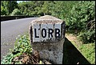

Cours d'eau de l'Hérault
Canal du Midi
Cessière
MARELLE 1
MARELLE 2

ORB
SAINT-MARTIAL 1
SAINT-MARTIAL 2
cliquez sur les vignettes pour les agrandir
Retour
Generated with Arles Image Web Page Creator